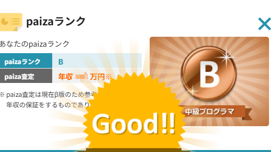
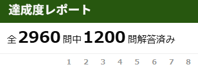

| 年 | 資格・実績 |
|---|---|
| 2018年 | 初級会計士 |
| 2019年 | 日本語能力試験(JLPT) N1合格 |
| 2025年 | ビジネス日本語能力テスト(BJT) 549点 J1級取得 |
| 2026年5月 | Paiza Bランク取得(使用言語: C) |
| 2026年7月 | ビジネス能力検定ジョブパス 二級 受検（結果待ち） |

*5月末 Paiza Bランクの獲得順番は43人中の2位(クリック画像見る)| スキル(1年夏休みまで) | 二次元配列の操作やデータ処理などのアルゴリズムが記述できる | |
|---|---|---|
| 使用言語 | C言語 | Java(入門) |
| データベース | Oracle | |
| 過去仕事時のスキル | ||
|---|---|---|
| Excel | ピボットテーブル | VLOOKUP関数でのデータ解析 |
